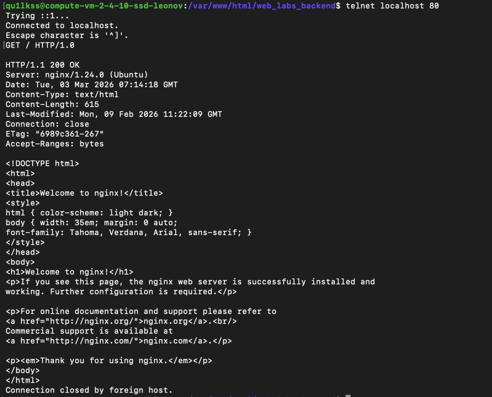
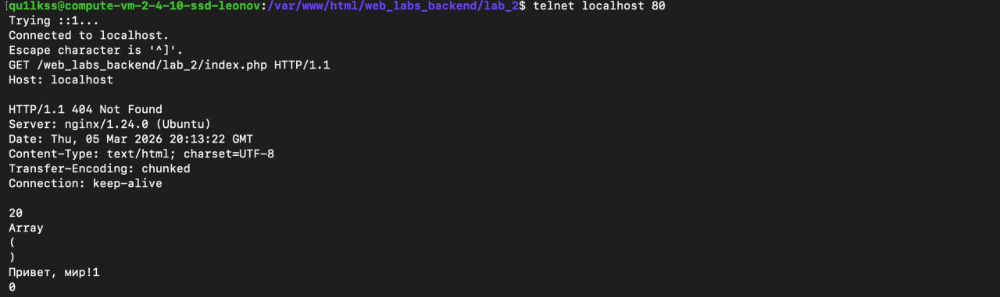
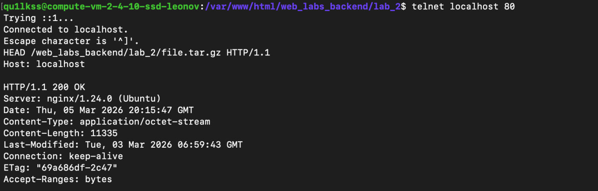
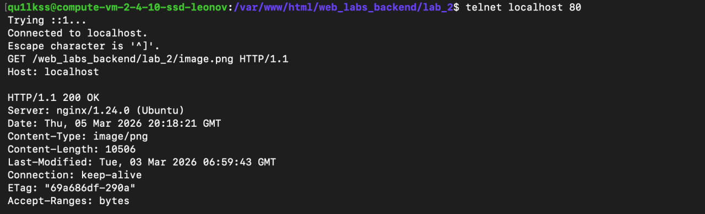
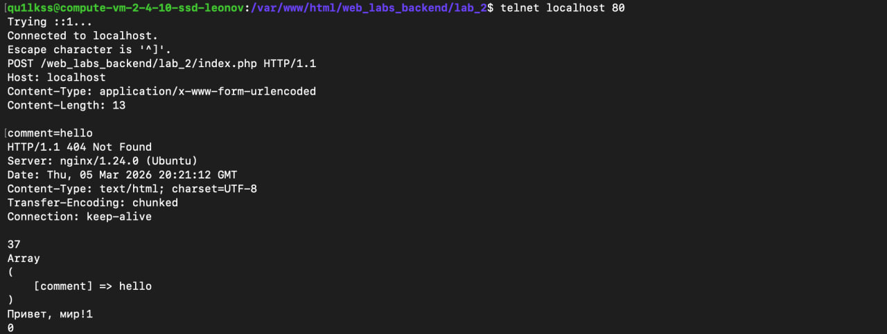
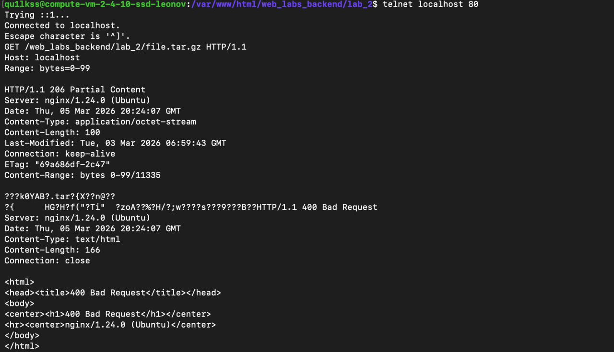
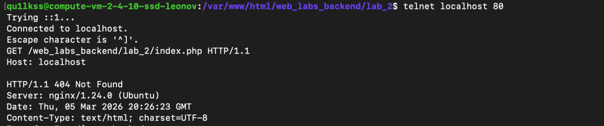

Лабораторная работа №2
Исследование протокола HTTP
1. Получение главной страницы (HTTP/1.0)
GET / HTTP/1.0
Ответ сервера: HTTP/1.1 200 OK

2. Получение внутренней страницы (HTTP/1.1)
GET /web_labs_backend/lab_2/index.php HTTP/1.1
Host: localhost
Ответ сервера: страница index.php

3. Определение размера файла без скачивания (HEAD)
HEAD /web_labs_backend/lab_2/file.tar.gz HTTP/1.1
Host: localhost
Ответ сервера:
HTTP/1.1 200 OK
Content-Type: application/octet-stream
Content-Length: 11335
Размер файла: 11335 байт

4. Определение медиатипа файла
GET /web_labs_backend/lab_2/image.png HTTP/1.1
Host: localhost
Ответ сервера:
Content-Type: image/png

5. Отправка комментария (POST)
POST /web_labs_backend/lab_2/index.php HTTP/1.1
Host: localhost
Content-Type: application/x-www-form-urlencoded
Content-Length: 13
comment=hello
В ответе сервер возвращает полученный параметр:
[comment] => hello

6. Получение части файла (Range)
GET /web_labs_backend/lab_2/file.tar.gz HTTP/1.1
Host: localhost
Range: bytes=0-99
Ответ сервера:
HTTP/1.1 206 Partial Content
Content-Range: bytes 0-99/11335
Сервер вернул первые 100 байт файла.

7. Определение кодировки страницы
GET /web_labs_backend/lab_2/index.php HTTP/1.1
Host: localhost
Ответ сервера:
Content-Type: text/html; charset=UTF-8
Кодировка страницы: UTF-8
